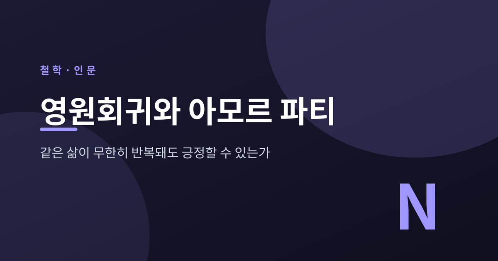

이번 글에서는 니체의 두 개념, 영원회귀와 아모르 파티를 정리해 보겠습니다. 지금 이 삶이 토씨 하나 바뀌지 않고 무한히 되돌아온다면, 그래도 긍정할 수 있는가. 니체가 던진 이 물음과 그가 내놓은 답을, 원전의 맥락에 따라 차분히 따라가 보려 합니다. 특정 신념을 설파하려는 글이 아니라, 한 사상을 있는 그대로 풀어 보는 글입니다.
먼저 이 사상이 태어난 자리를 짚겠습니다.
1881년 8월, 니체는 스위스 실스마리아의 실바플라나 호숫가를 걷고 있었습니다. 수를레이 근처의 거대한 피라미드형 바위 옆에서 그는 한 생각을 종이에 적습니다. 그 아래엔 이런 메모가 남았습니다. “인간과 시간을 넘어 6000피트.”
훗날 그는 『이 사람을 보라』에서 그 생각이 번개처럼 왔다고 회고했습니다. 바위의 육중한 무게는 그대로 사상의 이름에 스며듭니다. 『즐거운 학문』에서 이 관념은 “가장 무거운 짐”이라 불리게 됩니다.
독일어 원어는 ‘에비게 비더쿤프트(ewige Wiederkunft)’, 즉 ‘같은 것의 영원한 회귀’입니다. 내 삶의 모든 순간이 — 기쁨도 고통도, 사소한 것도 위대한 것도 — 똑같은 순서와 배열로 무한히 되돌아온다는 관념입니다. 어떤 세부도 빠지지 않고, 어떤 것도 바뀌지 않습니다.
니체는 이 관념을 우주의 법칙으로 증명하려 들지 않습니다. 대신 하나의 사고실험으로 제시합니다. 『즐거운 학문』 341번, 제목은 “가장 무거운 짐”입니다.
어느 날 한 악령이 당신의 가장 깊은 고독 속으로 찾아와 이렇게 속삭인다고 해 봅시다.
“네가 지금 살고 있고 살아온 이 삶을, 너는 다시 한번 그리고 무수히 반복해서 살아야 할 것이다. 거기엔 새로운 것이라곤 없다. 모든 고통과 기쁨, 모든 생각과 한숨, 말할 수 없이 작고 큰 모든 것이 똑같은 순서로 되돌아온다. 나무 사이의 이 달빛도, 이 순간도, 그리고 나 자신마저도.”
니체의 물음은 여기서 시작됩니다. 당신은 이를 갈며 그 악령을 저주하겠습니까. 아니면 “너는 신이다, 이보다 더 신적인 말을 들어본 적이 없다”고 답할 그런 순간을 이미 살아 본 적이 있습니까.
이 가정이 공포로 다가온다면, 아직 자신의 삶을 온전히 긍정하지 못한 것입니다. 반대로 이를 가장 큰 선물로 맞이할 수 있다면, 삶에 대한 완전한 ‘예’에 도달한 셈입니다. 영원회귀는 그래서 우주론이기 이전에, 내 삶이 살 만했는지를 스스로 재는 저울입니다.
같은 사상이 『차라투스트라는 이렇게 말했다』에서는 이야기의 옷을 입고 나타납니다. “환영과 수수께끼에 대하여”라는 장입니다.
차라투스트라는 음울한 황혼 속 산길을 오릅니다. 그의 어깨엔 ‘중력의 정신’이 앉아 있습니다. 반은 난쟁이, 반은 두더지인 이 존재는 삶을 무겁게 짓누르는 힘, 허무와 체념의 유혹을 상징합니다.
길이 갈라지는 곳에 성문이 하나 서 있고, 그 위엔 “순간”이라 적혀 있습니다. 이 문에서 두 갈래 영원한 길이 앞뒤로 뻗습니다. 차라투스트라는 묻습니다. 일어날 수 있는 모든 일은 이미 이 길을 지나가지 않았는가. 그렇다면 앞으로도 다시 달려가지 않겠는가.
과거와 현재는 이미 얽혀 있고, 미래는 지금 이 순간에 온 것으로 결정됩니다. 그래서 삶은 영원히 되돌아옵니다. 다만 차라투스트라가 이 진실을 긍정하려면, 먼저 어깨 위의 난쟁이를 이겨 내야 합니다. 무거움을 이기지 못하면 영원회귀는 저주가 될 뿐입니다.
영원회귀가 물음이라면, 아모르 파티는 그 물음에 대한 답입니다.
‘아모르 파티(amor fati)’는 라틴어로 ‘운명에 대한 사랑’입니다. 삶에서 일어나는 모든 것을, 고통과 상실까지도, 좋은 것 혹은 적어도 필연적인 것으로 받아들이는 태도입니다.
이 말은 『즐거운 학문』 276번에 처음 등장합니다. “나는 사물에서 필연적인 것을 아름답게 볼 줄 아는 법을 배우고 싶다. 아모르 파티, 이것이 이제부터 나의 사랑이 되게 하라.”
만년의 『이 사람을 보라』에서 그는 더 단호해집니다. 위대함에 대한 자신의 공식은 아모르 파티라고. 어떤 것도 다르기를 바라지 않는 것 — 앞으로도, 뒤로도, 영원토록. 필연을 단지 견디는 것이 아니라 사랑하는 것.
논리는 이렇게 이어집니다. 이 삶이 영원히 반복돼도 좋다고 말하려면, 지금 이 삶의 모든 것을 사랑해야 합니다. 영원회귀라는 무거운 짐이 오히려 매 순간에 가장 큰 무게를, 그리고 가장 큰 의미를 얹는 것입니다.
이 두 개념은 자주 오해받습니다. 세 가지만 짚겠습니다.
첫째, 아모르 파티는 운명론이 아닙니다. 운명론은 바꿀 수 없는 운명에 수동적으로 굴복하는 태도입니다. 아모르 파티는 운명을 능동적으로, 기쁘게 끌어안습니다. 니체는 스토아주의의 초연함마저 너무 수동적이라 비판했습니다. “그들은 존재에서 끔찍한 성격을 없애려 하지만, 그로써 존재의 위대함마저 빼앗는다.” 평정이 아니라 열정을, 견딤이 아니라 사랑을 요구한 셈입니다.
둘째, 영원회귀는 검증된 물리학 이론이 아닙니다. 학계에서도 이를 시간의 본성에 관한 우주론적 가설로 볼지, 삶을 긍정하기 위한 실존적 사고실험으로 볼지 오래 논쟁해 왔습니다. 우주론적 독해는 주로 유고집에 의존하고 팽창하는 우주라는 증거와 충돌해, 다수 학자는 실존적 독해에 무게를 둡니다.
셋째, 아모르 파티는 값싼 긍정 슬로건이 아닙니다. 고통과 실패까지 필연적이고 의미 있는 것으로 사랑하라는 요구는, 오히려 견디기 가장 어려운 주문에 가깝습니다.
영원회귀와 아모르 파티는 니체 사상의 더 큰 그림, 곧 허무주의 극복 안에 놓입니다.
니체는 허무주의를 두 갈래로 나눕니다. 수동적 허무주의는 삶에서 물러나 절망하는 태도입니다. 스스로 가치를 만들지 못하는 약한 의지입니다. 능동적 허무주의는 다릅니다. 낡은 믿음을 스스로 부수고, ‘신의 죽음’ 이후의 빈자리에 자신의 가치를 새로 세웁니다. 허무를 끝이 아니라 ‘가치의 재평가’를 위한 출발점으로 삼습니다.
삶에 미리 주어진 의미가 없다면, 스스로 이 삶을 사랑함으로써 의미를 만든다. 이것이 니체의 방향입니다.
여기엔 그의 인식론도 겹칩니다. 『도덕의 계보』에서 니체는 “오직 관점적으로 보는 것만이 있을 뿐”이라고 말합니다. 이를 관점주의라 부릅니다. 객관적이고 무관점적인 ‘신의 눈’은 없다는 것입니다. 그렇다면 영원회귀 역시 증명된 법칙이 아니라, 삶을 대하는 하나의 강력한 관점으로 읽을 수 있습니다. 이 관점을 택할지 말지는 결국 각자의 몫으로 남습니다.
정리하면 이렇습니다.
영원회귀는 답이 아니라 물음입니다. 같은 삶이 무한히 되돌아와도 좋겠는가. 아모르 파티는 그 물음 앞에서 니체가 택한 대답의 이름입니다. 필연을 견디는 데 그치지 않고, 그것을 사랑하는 데까지 나아가는 태도.
이 사상이 옳은지 그른지는 이 글이 결론지을 문제가 아닙니다. 다만 물음 하나는 남습니다.
“지금 이 하루가 영원히 되돌아온다면, 당신은 악령을 저주하겠습니까, 아니면 신의 말을 들었다고 답하겠습니까.”
그 대답을 잠시 마음속에 떠올려 보시면 좋겠습니다.